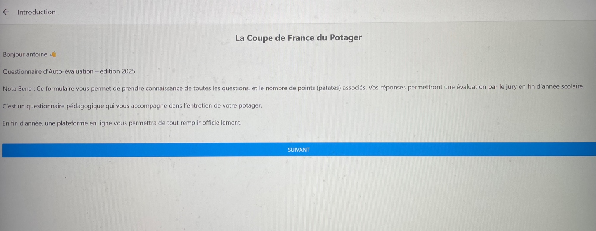

Développement d’un outil numérique pour Landestini
Landestini est une association et un fonds de dotation engagés pour l’écologie, l’alimentation durable, et la biodiversité, notamment autour du potager.
Ils organisent plusieurs compétitions éducatives et écologiques :
- La Coupe du Monde du Potager 🌍
- La Coupe de France du Potager 🇫🇷
- Des coupes régionales (ex : Hauts-de-France)
J’ai conçu un outil numérique unique, accessible à la fois sur mobile et web, destiné à accompagner la Coupe de France du Potager.
Ce système propose un questionnaire d’auto-évaluation complet permettant aux participants d’évaluer leurs pratiques avant le passage du jury.
Développé en React Native pour l’application mobile et en Express.js / SQLite pour l’interface web, ce projet a nécessité une réflexion complète sur l’accessibilité, l’ergonomie et la synchronisation entre les supports.
